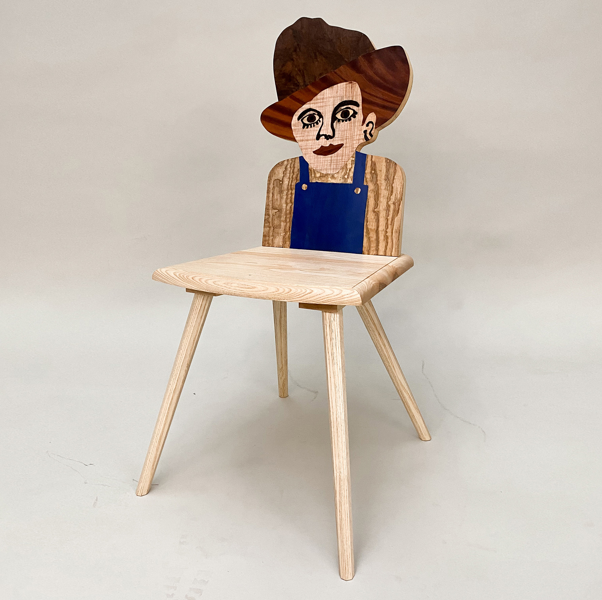
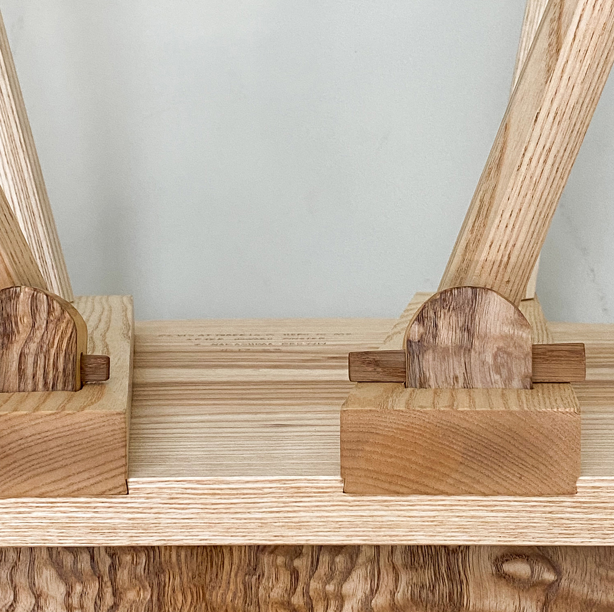
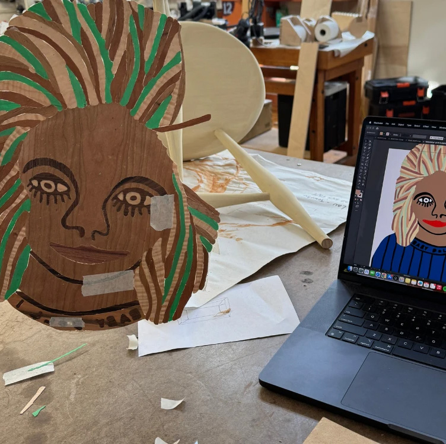
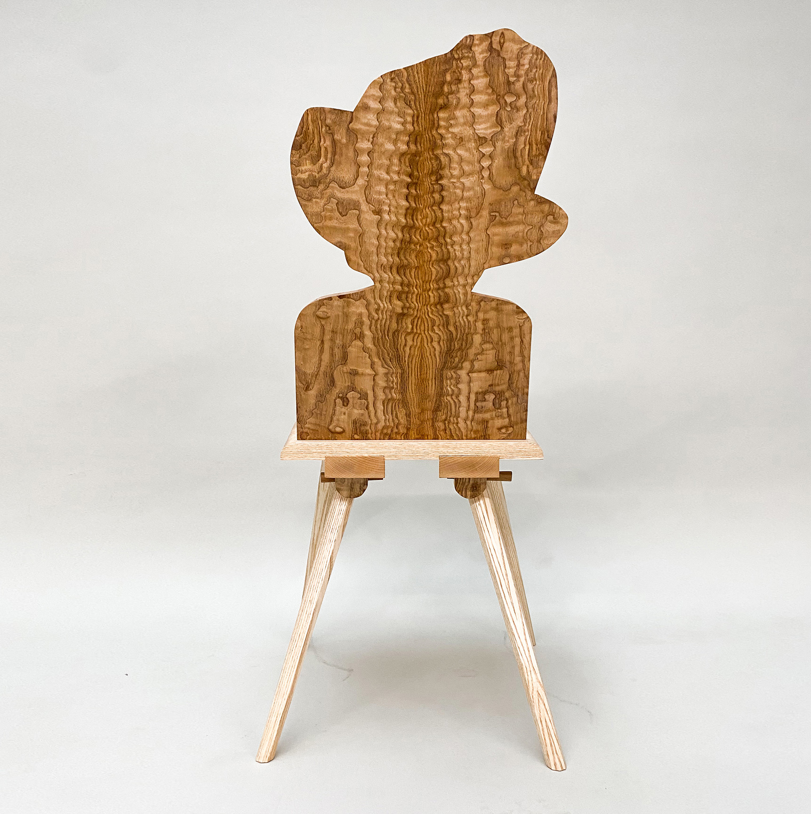
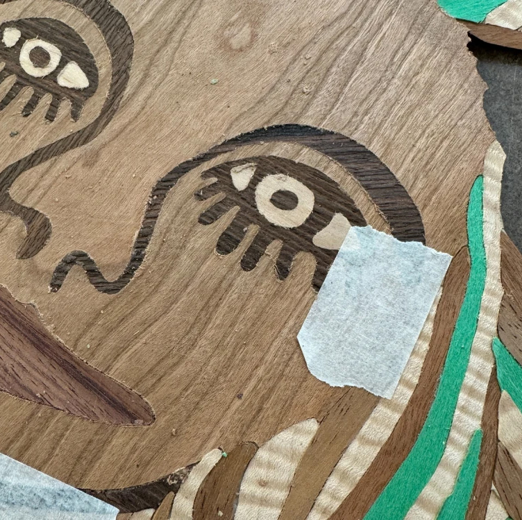
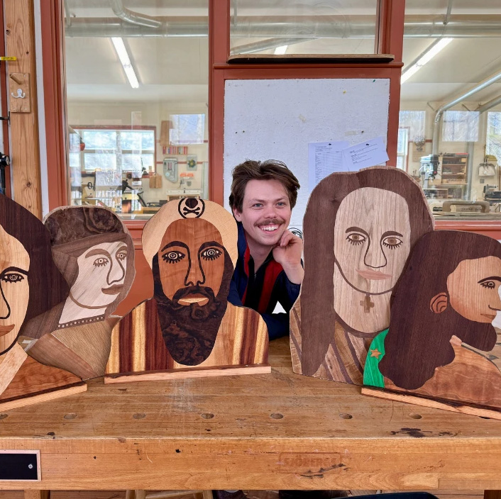

Bretstuhl
Solo project
2025
Designed and built by
Hugo Nakashima-Brown
2025
Designed and built by
Hugo Nakashima-Brown

Q: Was it your plan to create these heads during your residency?
A: My big project was a marquetry door. It's like four feet by eight feet, for a client. And then I was kind of like, this is too fussy. So I did these after I finished it.

Q: How did you get started on this path?
A: Originally I did a chair. I was making a Brettstuhl, which is kind of a traditional folk form. I was interested in the idea of how people often do these very ornate carved backs, but if you look at the old ones, they're really just utilitarian, thrown together chairs. The joinery is not good. So I was like, what if I made it like a folk back, but the back was a piece of Americana that was very well crafted. So I did. That was the first marquetry thing I did. It's a chair with this very tight and complex joinery, but at the same time it's very basic.
←

Q: You consider this work basic?
A: In a way, yes. The marquetry itself is not easy to do, right? Because there's all that short grain in there. It becomes very weak and it just wants to crumble. So it's about how do I take this drawing that's done on Photoshop in the stupidest way possible, but it nonetheless has some compelling aspects to it and then, take it and make it into art.
↓

Q: What kind of reactions have you gotten to this work?
A: Oh, I love it because you either get really, really negative or really positive reactions. It’s one of the two. The negative reactions are like, “I fucking hate that thing. Get it out of here. It’s creepy.” I haven’t gotten so many negative reactions here at Penland. People at my furniture school were confused because I made that first chair while I was still in school at a traditional woodcraft school. People didn’t really know what to say because it was like a well-made period piece of furniture but it was also so odd to them to have the back be well-made as a work of marquetry but so crude as a drawing.
→

Q: What tools are you using?
A: So, normally I do them with the scroll saw. I’ve been experimenting because I can’t do them by hand if they’re too large, so I’ve been trying out using the
CNC
and that worked quite well, so I might continue doing that.
and that worked quite well, so I might continue doing that.
↓

Q: It seems like contrast would be important?
A: Exactly, because you have a limited color palette. You can get dyed veneers but I didn’t really have any here, so your pale tones are white, which would be holly. Skin tones could be walnut or cherry or maple. They’re all kinds of reds and yellows. In terms of the composition, there is that. That’s what I was kind of interested in. They are so simple as a drawing and the colors themselves are not complex. I’m not trying to make a realistic impression of something. I’m not that interested in marquetry as an abstract composition either. I think typical traditional applications of marquetry are either realism or they are patterns and geometry. I’m kind of interested in these geometric sort of shapes, but they’re nonetheless figurative.
←

link to full interview:
https://penland.org/remaking-rembrandt-in-marquetry/
↓